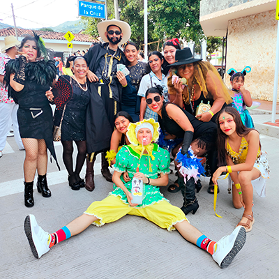

descubre las fotos
Tradición y cultura en cada fotografía

La familia Castañeda
Una de las comparsas más tradicionales del municipio, conocida por su humor, disfraces y alegría que llenan de color las calles durante la feria.

Competencias de balineras
En la feria de Supía, Caldas, los carritos de balineras llenan de emoción a grandes y chicos, con carreras divertidas que son toda una tradición.
Reinado de la Colación
Jóvenes que representan la cultura supieña con traje, elegancia y tradición. Un evento que celebra la identidad femenina del municipio.

Cabalgata
La cabalgata del lunes festivo en Supía, Caldas, reúne a familias en un desfile lleno de color, tradición y alegría que marca uno de los momentos más esperados de la feria.